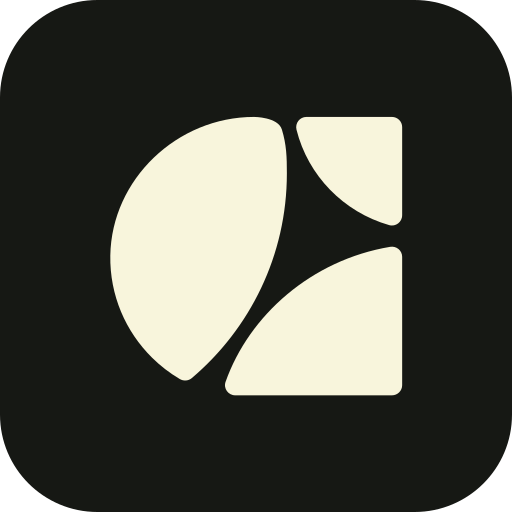
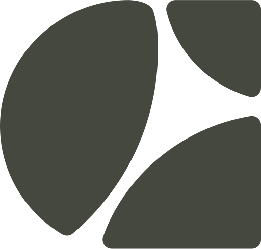
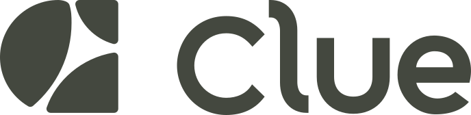
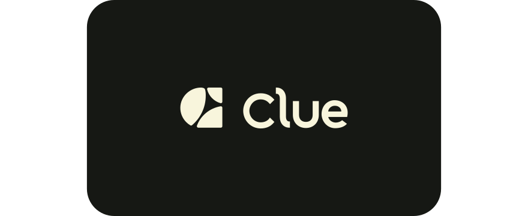

Geometry is the current production mark (three pieces: crescent + two rounded quads) and the website lockup. Sources: apps/frontend/public/icons/clue-mark.svg, ~/Documents/clue-website/public/favicon.svg, ~/Documents/clue-website/public/assets/clue-wordmark.svg. Colours: cream #F8F5DC, ink #161814, olive #44483F.




